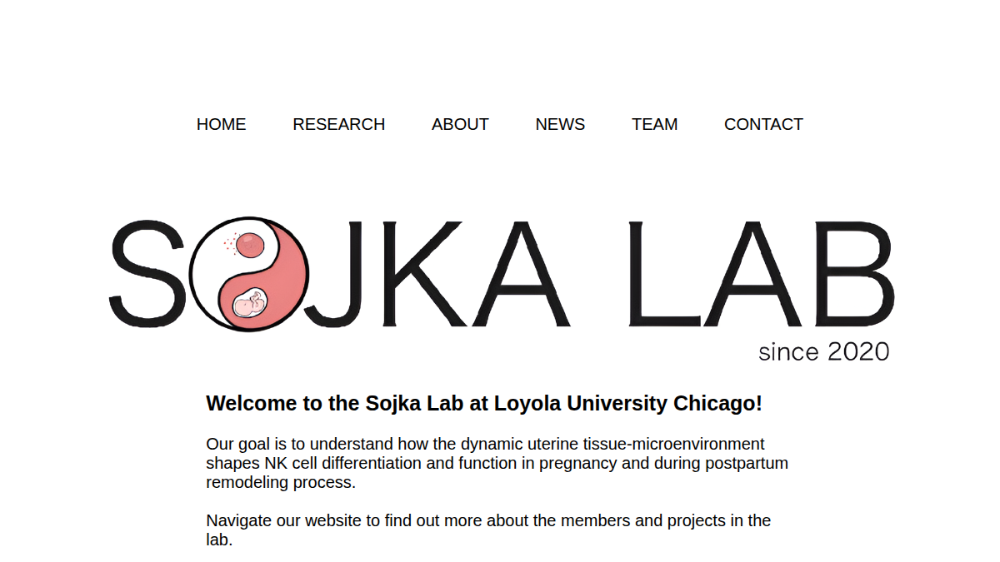
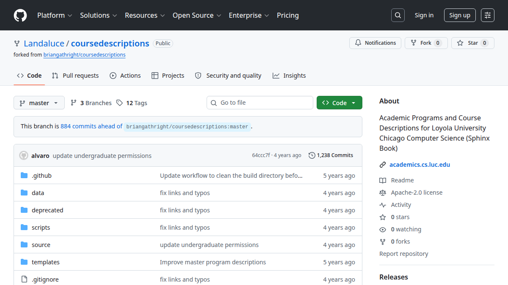
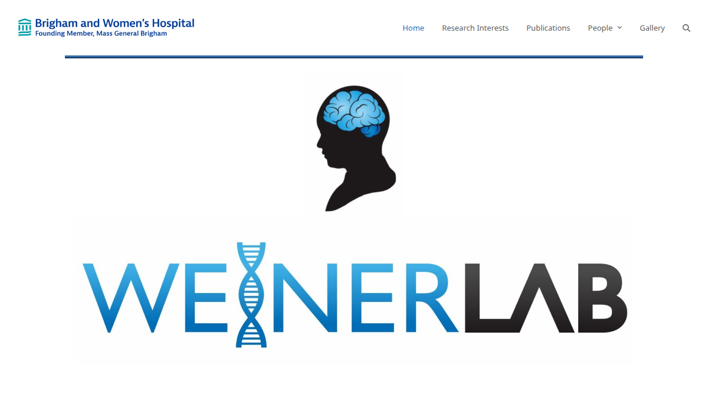
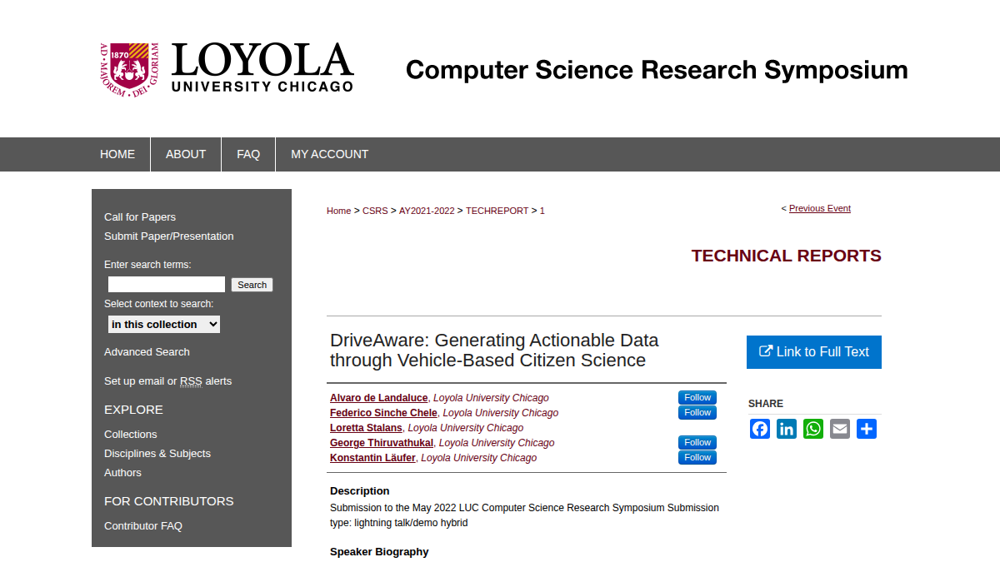
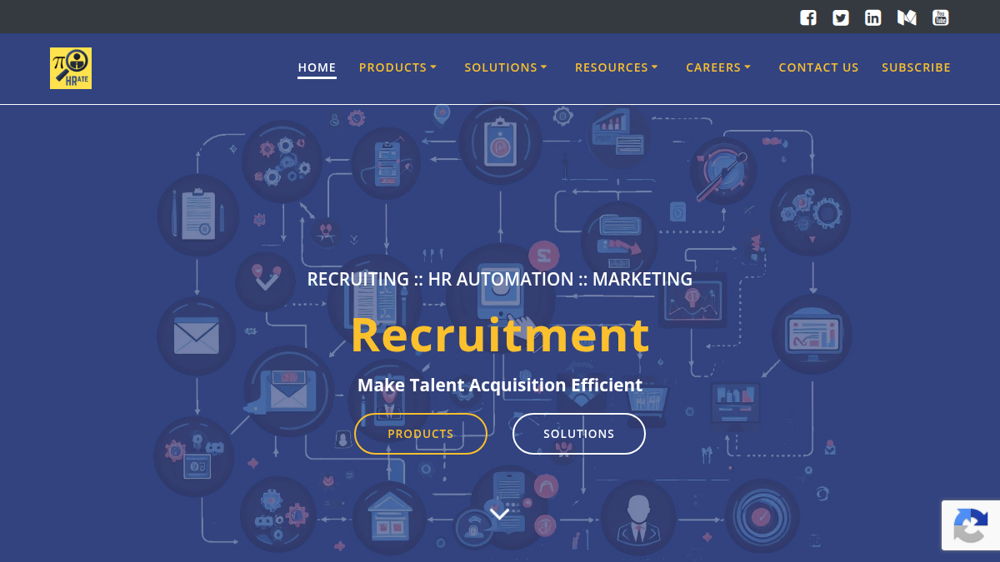
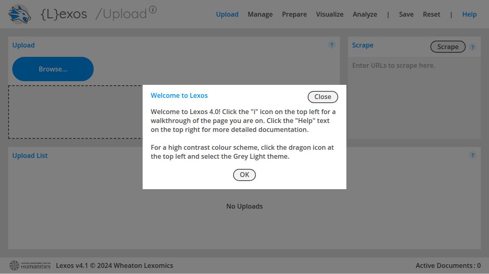

Sojka Lab Website

Helped a lab keep its website current by maintaining pages, updating content, and testing for cross-browser compatibility.
Web Developer • Full-Stack Developer • Python Engineer
I build and maintain user-focused software across academic, research, and freelance environments.
Open to web development and software engineering roles.
Software developer with 5+ years of experience in HTML, CSS, JavaScript, Python, Flask, Django, WordPress, databases, and Linux-based workflows.

Helped a lab keep its website current by maintaining pages, updating content, and testing for cross-browser compatibility.

Improved a university department website by maintaining course and handbook pages so students, faculty, and visitors could find information more easily.

Worked with stakeholders to improve an existing website and implement front-end enhancements that supported a better user experience.

Built an Android app and Python analysis tool to turn collected crime data into a more useful dataset for research and decision-making.

Automated HR workflows with Python and full-stack development to reduce manual effort and improve process efficiency.

Refactored Django text-mining tools and clustering visualizations so researchers could analyze digitized texts more effectively on Linux systems.
Email: alvarolandaluce@gmail.com
LinkedIn: alvarolandaluce
GitHub: github.com/Landaluce